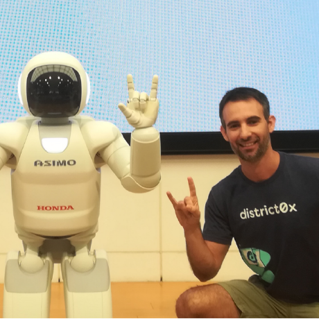

Speakers
Alejandro
Cvetomir M Dimov

I am a researcher in Cognitive Psychology. In previous work I have studied human decision making, skill acquisition and memory. My recent focus has been the study of the complex processes behind collaboration. I have already developed a collaborative skill acquisition model. I am currently working on refining that model with speech capabilities.
Daniel Slutsky

Daniel Slutsky is a mathematician and a data science consultant. His current main focus is at the Scicloj group. There, he is involved in community building and co-maintaining a few of the Scicloj tools and libraries. His approach towards open-source communities is drawn from his past experiences in various activist groups and his involvement in local yoga communities.
Eoin Carney

I work in government administration for my day job. I have a hobbyist interest in programming and data science, and have been learning Clojure for around 3 years. I also have a background in academic philosophy and completed a PhD thesis on the work of Paul Ricoeur in 2018.
Harold

Owner: TechAscent - Mathematician | Software Engineer | Cloud (AWS) | Clojure | JS | Data Science | AI/ML
Heather Moore-Farley


Heather is a Clojurist in Oakland, California, who cares a lot about street safety and the quality of life in her community. When she isn’t working, she is biking around the East Bay, drumming, or knitting.
Jelena Losic
My name is Jelena, and I am a PhD student at the Faculty of Mathematics, University of Belgrade, specializing in Complex Networks. Over the past 10 years, I have worked as a functional programmer, primarily using Scala, with some experience in Clojure as well. My research interests lie in exploring the intersections of mathematics and scientific disciplines, uncovering the boundaries where these fields converge and interact.
Juan Monetta

Juan is a seasoned software developer from Uruguay, with professional experience dating back to the late 1990s. Since 2011, he has specialized in Clojure, working on a wide range of domains. Lately he has been focusing on development tools aiming to make programming more enjoyable and insightful. Have created and currently maintain FlowStorm, as well as several other tools like Clofidence, Clindex, and Clograms - all aimed at improving code exploration, testing, and visualization. Juan is also active in the Clojure community, sharing his work through open source projects, technical talks, and contributions. His passion lies in making software development more interactive, visual, and fun.
Julius Kibunjia
A programmer from Nairobi, Kenya interested in applying software to all aspects of life.
K Ram Narayan

Software Engineer passionate about functional programming and building scalable, elegant backend systems.
Kira Howe

Kira’s been writing software for the past decade with a focus on data-intensive web apps and a particular interest in Clojure programming and data visualization. She loves open source development, fostering communities online and in-person, and learning new things. When she’s not at her desk, you can find Kira teaching yoga, playing violin, or running with her dog.
Lorelai Lyons

Lorelai is a technologist and artist exploring the intersection of neuroscience, programming, and ethics. With a background in music and philosophy, she brings a unique perspective to data science—blending curiosity, critical thinking, and creative expression.
She’s active in the Clojure community as a board member of Clojurists Together, a member of Clojure Camp, and an organizer with SciCloj. Lorelai is currently focused on developing accessible tooling for brain-computer interfaces, advocating for ethical neurotechnology, and making brain data more approachable for developers of all backgrounds.
Naimish Mani B

Mechanical Engineering graduate with a strong interest in Computational Engineering. Experienced in Numerical Methods, Backend Development and Machine Learning. Passionate about climate science.
Paula Gearon

Paula Gearon is a Semantic Webstress and Clojure developer with a focusing on graph systems and technical architecture, and AI. Her background includes building infrastructure and low-level systems, and researching AI. Paula has served as a technical lead on both commercial and open-source projects, with experience in data storage, processing, and language internals. Her work extends to standards development, having been a lead editor for the SPARQL standard for RDF databases. An Australian native now based in Virginia, USA, she balances her professional life with study, triathlons, cooking, and family time.
Siyoung Byun

Siyoung Byun is currently a freelance fullstack Clojure developer living in Seoul, South Korea. She studied Astrophysics for her undergrad in Canada, where she first got into programming and data analysis while running simulations of dying stars crashing into each other. Ever since she was introduced to Clojure at a previous employer in 2018, it quickly became her favorite programming language and her passion. Beyond software development and data analysis, she likes to hike, bike, knit, sew and snuggle with her cat in her free time.
source: notebooks/speakers.clj